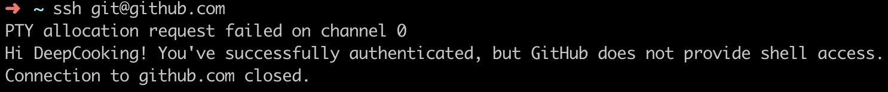
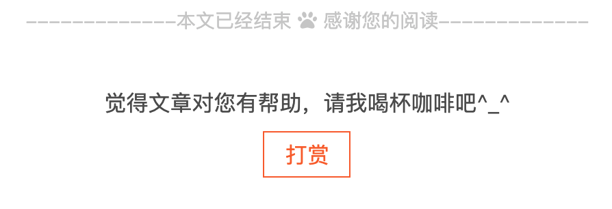
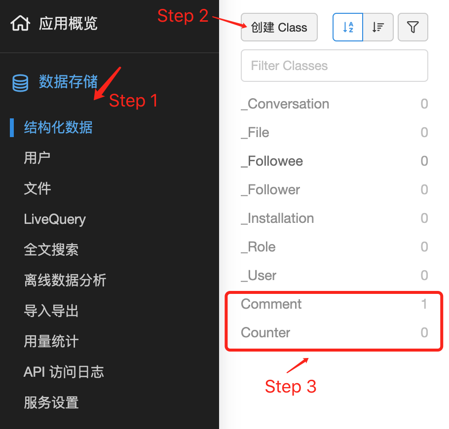
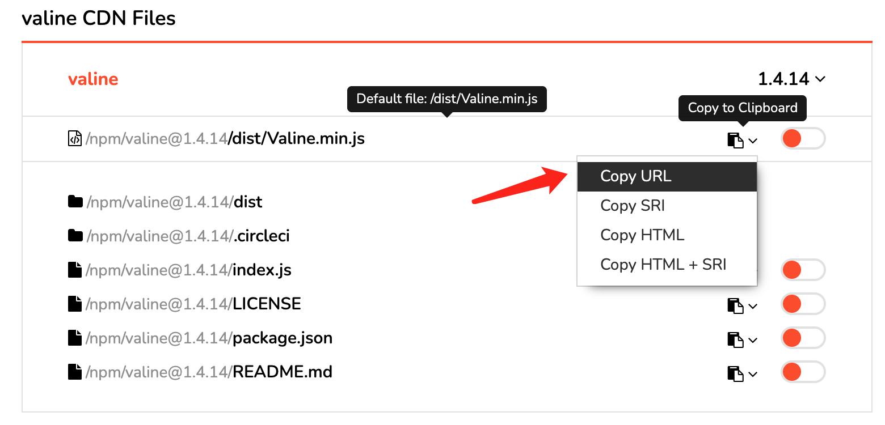

使用Hexo来搭建自己的个人博客
1. 配置github
1.1. git
首先要给电脑安装git，由于我使用的是MacBook Pro，所以可以很简单的使用homebrew来安装git
然后就是配置git的账户名称，以及设置配置SSH密匙
1 | git config --global user.name "你的GitHub用户名" |
执行如下命令，能查看是否配置成功：
1 | cat .gitconfig |
1.2. ssh密匙
终端中执行如下命令，进入.ssh文件夹，查看是否已经有了ssh密钥：
1 | cd ~/.ssh |
生成密钥：
1 | ssh-keygen -t rsa -C "你的GitHub注册邮箱" |
打开Github — Setting — SSH and GPG key — new SSH Key
Title为标题，任意填即可，将刚刚复制的id_rsa.pub内容粘贴进去，最后点击Add SSH key。
在Terminal中检测GitHub公钥设置是否成功，输入 ssh git@github.com ，出现下图，则成功配置。

2. 配置环境
2.1. Node.js
1 | brew install node |
2.2. hexo
1 | npm install hexo-cli -g |
安装完成后，初始化我们的博客，输入：
1 | hexo init blog |
3. 配置
使用经典的 hexo-theme-next 主题，为了方便以后的更新，我们 fork 一份代码到我们自己的仓库，然后 clone 下来。
1 | git clone https://github.com/yourname/hexo-theme-next.git themes/next |
3.1. 配置hexo的config
1 | # Site |
3.2. 添加页面
添加3个页面（标签、分类、关于）
1 | cd your-hexo-site |
然后到source文件夹中找到这三个页面的index.md，做出如下修改
1 |
|
1 |
|
1 |
|
3.3. 设置模板
scaffolds 文件夹下面有三个模板，我们修改其中的 post
1 |
|
3.4. 添加图片
在hexo的官方文档资源文件夹章节上，其提供了一种插入图片的方法，设置如下
1 | 根目录：_config.yml |
这样当我们使用命令：hexo new post test_name 的时候，会产生一个 Markdown 文件以及一个同名的文件夹。推荐使用 Typora 这个软件来进行 Mardown 的编写，通过我们上面设置的 post 模板。当我们插入一个图片的时候，自动插入到了我们 new 出来的文件夹中。另外在 Typora 的设置中勾选 “优先使用相对路径”
这样我们就可以在文档中通过： 命令来插入图片。
虽然在 Typora 里面图片显示的是正常的，但是 hexo 会将文件夹中的图片拷贝到与 Markdown 文件同级目录下面，这样生成的 HTML 中图片的路径为 test_name/example.jpg ，所以就会加载不出来。
解决方法是安装 hexo-typora-image 插件来帮我们修改成正确的路径。
1 | npm install hexo-typora-image --save |
修改 hexo-typora-image.js 源码，添加以下语句：
1 | data.content = data.content.replace(/^\<img src=+\"(.+\/)(.+)\>/gm, (str, dir) => str.replace(dir, '')); |
3.5 文章结尾
在文章的结尾添加打赏二维码，并且添加"本文已经结束"的提示

首先，在 next/layout/_macro 文件夹下新建 post-end-tag.swig ，内容如下：
1 | <div> |
然后，修改 next/layout/_macro/post.swig 文件，修改以下位置：
1 | {%- if not is_index %} |
二维码添加到 next/source/images 中，并且修改 config。
3.6 Mathjax
首先安装 npm install hexo-renderer-pandoc --save
并且卸载 npm un hexo-renderer-marked --save
https://theme-next.js.org/docs/third-party-services/math-equations.html?highlight=math \[ \begin{equation} \label{eq1} e=mc^2 \end{equation} \] \(2^n = abcd\)
使用pandoc会造成图片的解析错误，需要在 Hexo 的 _config.yml 中加入：
1 | pandoc: |
3.7 评论系统
对于评论系统的选择可以参考 知乎 : Hexo（NexT 主题）评论系统哪个好？。目前我的个人站点用的是Valine 。
首先，去LeanCloud网站注册账号，注册完成后，进入控制台创建一个应用，然后进入应用管理界面，创建两个 Comment 和 Counter 两个 Class，用来存储我们的评论以及网页的访问数量。

另外，我们需要选择左下角的设置>应用Key，然后就能看到你的 APP ID 和 APP Key 了：

接下来，我们需要修改 Next 主题的 _config.yml 文件，将 active 设置为 true 。并将我们的 APP ID 和 APP Key 填入。
1 | # Multiple Comment System Support |
最后，我们修改Valine的CDN地址，到 https://www.jsdelivr.com/package/npm/valine 这个地址选择最新版本的Valine，复制CDN地址。

在 _config.yml 中搜索一下 Valine.min.js，修改即可。
1 | # Valine |
3.8 支持Google搜索
1 | npm install hexo-generator-sitemap --save |
4. 新机
首先配置Iterm2，安装oh my zsh，配置p10k
1 | hexo clean && hexo g && hexo s |
执行完上述命令，会将我们写好的Blog转为对应的HTML，接下来我们需要将其上传到GitHub。
1 | hexo d |